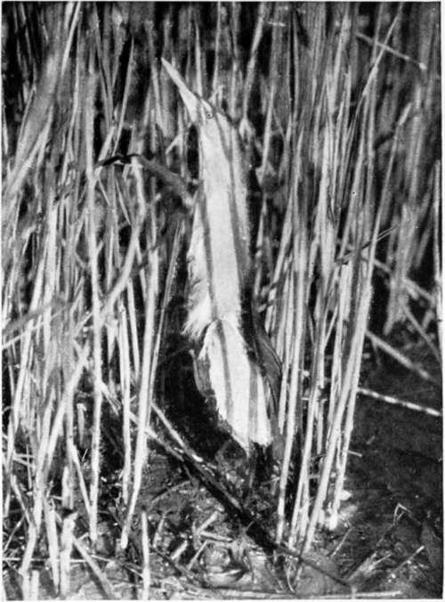
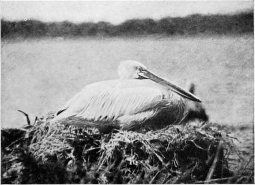

The Balkans Revisited : Albania. Part 2
Description
This section is from the book "Bird-Hunting Through Wild Europe", by R. B. Lodge. Also available from Amazon: Bird-Hunting Through Wild Europe.
The Balkans Revisited : Albania. Part 2
Dalmatian Pelicans (Pelecanus Crispus)
The fact was that I hadn't fired a shot-gun for nearly thirty years, until last year, and then only for collecting purposes, when sitting shots are the rule; and I was very much out of practice. I had had plenty of rifle-shooting at a target, but that, I am convinced, spoils anybody for shooting flying.
But if I had little to show on some of these occasions there was generally a goodly lot of duck to be picked up round B-'s island, for he was a good shot. He was also the most enthusiastic sportsman I have ever met, and would cheerfully go through any fatigue and discomfort for the sake of a little shooting. The enjoyment he would get out of these rough days on the lagoon was quite infectious, and he was quite as enthusiastic in watching and observing birds, and would spend hours in the reed-beds noting the intervals of time in the booming of the Bitterns, and trying to watch them at close quarters. He did succeed in finding a nest with four eggs. Unfortunately this was after I had left, for it is a nest I have never yet been lucky enough to see, and a photograph of a Bittern's nest is, as far as I know, not yet an accomplished fact.
He was also much interested in archaeology, and possessed a fine collection of coins and objects of art. The place is full of remains of Greek sculpture, and as he was known to be a buyer, the treasure-trove of the neighbourhood was certain sooner or later to be offered to him. A beautiful female head in marble, and an exquisite little torso, were among his choicest possessions. I have seen carved marble capitals used as door-steps to the rude huts of the peasants, and sticking out of the town wall; and they are frequently dug up in working the fields. The remains of an old Roman road across the lagoon are still to be seen, and on the hill commanding the town are the ruins of an ancient castle, either Venetian or Byzantine. For here, as in the Balkans generally, various powers have held the place and given way to others. Durazzo itself has been in turn Greek, Roman, Venetian, Bulgarian, and Turkish. The whole of the Balkans is, in fact, one gigantic battlefield, and there can hardly be a square inch of soil which has not soaked up its quantum of human blood. For thousands of years Romans, Greeks, Turks, Huns, Goths, Tartars, and Serbs have struggled and fought and died; and it is curious to reflect that before the Norman invasion of England there was a vast Bulgarian Empire governed by a Czar, whose realms included what are now Bosnia, Herzegovina, Dalmatia, Servia, Albania, and a goodly portion of Turkey and Greece.
But this ancient Bulgarian Empire fell, as did every Christian state south of the Danube, except Montenegro, into the all-devouring power of the Turk. They even attacked Vienna, and until comparatively recent times Budapest was a Turkish town. The petty jealousies of the various Christian sects could make no stand against the united strength of the followers of Mohammed.
Even to this day the bickerings and jealousy between the Greek and the Roman Catholic Churches, as well as the jealousy of one great power of another, all help to keep the Turk in Europe. And it is the greatest reproach against England by the Balkan peoples that Turkey is solely able to remain by her influence in maintaining the status quo. There is no doubt that by rights the Turks should be driven out entirely, being as they are a retrograde power, utterly opposed to all progress and enlightenment.
The Pelicans seemed to be in smaller numbers than last year, but they were just as shy and watchful as ever. They drew the line at any approach nearer than 300 or 400 yards, even when we lay down flat in one of the small dug-out canoes, and were paddled slowly and cautiously towards them. It was hopeless to try to get within gunshot ; and though one day I had several shots with my rifle, lying down in a wobbly canoe makes rifle-shooting very uncertain work at such a distance, and I never succeeded in hitting one of them, though they had some extremely narrow escapes.
We had planned to revisit the nesting colony by boat, intending to sail down the coast with tents, etc, and camp out again on the shores of the lagoon. When the day came, however, such a strong sirocco wind was blowing that the attempt by boat had to be abandoned, and we determined to ride as before. As the weather was still (March 13) very cold, we took my tent as well as B--'s, so that the men should also have some shelter at night.
Little Bittern (Ardetta Minuta)
Pelican On Nest (Pelecanus Crispus)
We were quite a formidable party as we rode out in the morning. Marco, of course, followed us perched on top of the big pack-saddle, but as the horse we had hired for him was not up to the combined weight, I had presently to dismount, and to ride his groggy-looking beast, while my old friend the black, Shaitan, was allotted the heavy pack, plus Marco, under which he did the long day's journey over rough country with perfect ease. Then there were three other pack-horses with the tents, each in charge of a man, the Baron and myself, and two suwarries ; mounted zaptiehs or gens d'armes, with their rifles and bayonets. These we engaged ostensibly for our protection, but really so as to guard against the possibility of the natives getting into trouble with the local authorities for assisting us on the journey, and to show them that we were acting with the permission of the governor. For as last year the head-man of the village had been imprisoned for giving us hospitality for a night, the natives everywhere would naturally be very unwilling to assist us, and might even oppose our progress if they thought we were engaged in anything underhand or against the Government.
Continue to:
- prev: XI. The Balkans Revisited : Albania
- Table of Contents
- next: The Balkans Revisited : Albania. Part 3